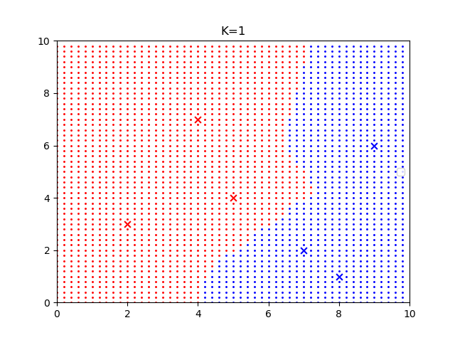
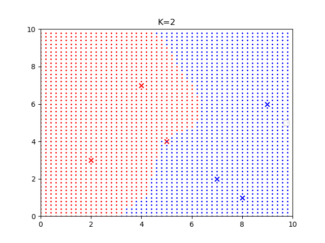
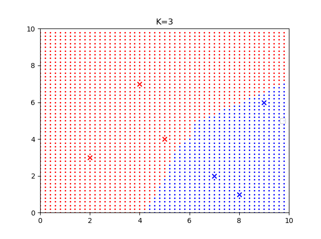

k近邻算法
k近邻（KNN）是一种不需要显式训练的分类算法，在inference时对于新的实例，根据最近的k个最近邻的训练实例的类别，通过多数表决的方式进行预测。
k近邻模型
KNN使用的模型实际对应于特征空间的划分，对于每个训练实例点，距离该点比其他点更近的所有点组成一个区域，叫作单元，每个训练实例点拥有一个的单元，所有实例点的单元构成对特征空间的一个划分。
KNN模型由三个要素决定：距离度量，k值选择，分类决策规则。
距离度量
常用欧式距离，也可以用更一般的$L_p$距离
$$
L_p(x_i, x_y) = (\sum_{l = 1}^{n}|x_i^{(l)} - x_j^{(l)}|^p)^{\frac{1}{p}}
$$
当$p = 1$时为曼哈顿距离；当$p=2$时为欧式距离；当$p = \infty$时为各个坐标距离的最大值。
k值选择
k值越小 $\Leftrightarrow$ 单个样本影响越大 $\Leftrightarrow$ 模型越复杂 $\Leftrightarrow$ 假设空间越大 $\Leftrightarrow$ 近似误差越小（估计误差越大），容易过拟合；
k值越大 $\Leftrightarrow$ 单个样本影响越小 $\Leftrightarrow$ 模型越简单 $\Leftrightarrow$ 假设空间越小 $\Leftrightarrow$ 近似误差越大（估计误差越小），容易欠拟合。
来自【如何理解和区分近似误差和估计误差? - mygame182的回答 - 知乎 https://www.zhihu.com/question/60793482/answer/1044887227】
分类决策规则
常用多数表决规则，等价于经验风险最小化。
kd树
与线性扫描相比，kd树能将最近邻搜索的时间复杂度从$O(N)$降到$O(\log N)$。
构造平衡kd树
- 构造根节点，根节点对应包含数据集$T$的$k$维空间的超矩形区域。选择$x^{(1)}$坐标轴，以$T$中所有实例的该坐标的中位数为切分点，将根节点切分成两个区域。将切分点保存在该节点。
- 对于不同的深度的节点，依次选择不同的坐标选择中位数节点进行划分。
- 直到两个子区域没有实例点存在，从而形成kd树的区域划分。
搜索kd树
- 在kd树中找到包含目标点$x$的叶节点，以该点为“当前最近点”。
- 递归向上回退，在每个节点：(a)判断是否将“当前最近点”更新为该节点。(b)检查另一子节点的对应区域，是否与以$x$和最近点距离画的圆相交。如果相交，则移动到这个子节点，递归地搜索；否则，向上回退。
- 回退到根节点时，搜索结束。
习题
画图观察不同k值对空间划分的影响。
1
2
3
4
5
6
7
8
9
10
11
12
13
14
15
16
17
18
19
20
21
22
23
24
25
26
27
28
29
30
31
32
33
34
35
36
37
38
39
40
41
42
43
44
45
46
47
48import matplotlib.pyplot as plt
import numpy as np
K = 1
X = np.array([[2,3], [5,4], [9,6], [4,7], [8,1], [7,2]])
Y = np.array([1, 1, 0, 1, 0, 0])
POS_X = []
NEG_X = []
for i in np.arange(0, 10, 0.2):
for j in np.arange(0, 10, 0.2):
dist = []
p = np.array([i, j])
for q in X:
dist.append(np.linalg.norm(p-q))
topk = np.argsort(dist)[0:K]
neg_cnt = 0
pos_cnt = 0
for t in topk:
if Y[t] == 1:
pos_cnt += 1
else :
neg_cnt += 1
if pos_cnt > neg_cnt:
POS_X.append([i, j])
else:
NEG_X.append([i, j])
plt.figure()
plt.xlim(0, 10)
plt.ylim(0, 10)
for x, y in zip(X, Y):
if y == 1:
plt.scatter(x[0], x[1], s=40, c='r', marker='x')
else:
plt.scatter(x[0], x[1], s=40, c='b', marker='x')
POS_X = np.array(POS_X)
NEG_X = np.array(NEG_X)
plt.scatter(POS_X[:,0], POS_X[:,1], s=5, c='r', marker='.')
plt.scatter(NEG_X[:,0], NEG_X[:,1], s=5, c='b', marker='.')
plt.title("K=%d"%(K))
plt.legend()
plt.show()



利用例题3.2构造的kd树求$x = (3, 4.5)^{T}$的最近邻点。
a. 先走到叶节点(4, 7)，当前最近点为(4, 7)
b. 走到父节点(5, 4)，更新当前最近点为(5, 4)。父节点的左子节点在圆内，于是走到(2, 3)。
c. 更新当前最近点为(2, 3)，一直回退到(7, 2)。右子节点(9, 6)也不与圆相交。结束。
所以最近邻点为(2, 3)。
参照算法3.3，写出输出为$x$的k近邻的算法。
维护一个k近邻的点集。圆的半径换成集合中的点与$x$距离的最大值。如果集合元素小于k则直接放入集合；否则，判断区域和圆是否有相交后再更新集合。